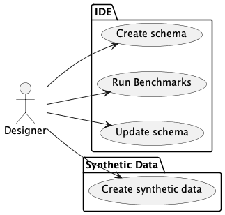
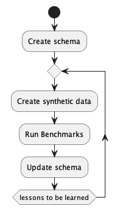

Context¶
The Synthetic Data tools are used to build code that creates useful data.
This means that development mostly happens in an IDE, importing and extending the tool to create the desired data.

The general workflow has a number of steps.
Create a schema using
pydantic.Use the schema to create synthetic data.
Use the synthetic data to create benchmark results of running real (or spike solution) software on real hardware with realistic data.
Update the schema to create “better” data. Often, the distributions, and optionality settings need tweaking. Also, customized synthesizers may be required.
Recreate the data. Rerun the benchmarks. Repeat as needed.
Here’s an activity diagram:

The “Run Benchmarks” is intentionally open-eneded.
For SQL Database Design, this often means loading a database and running queries. It may mean running batches of concurrent queries to guage performance under load. It may mean spinning up server farms to run large batches of queries. All of this is outside the tool. The tool synthesizes the data for controlled, reproducible, at-scale benchmarking.
The schema definition is explicitly aimed at creating a definition that’s usable by JSONSchema tools. See https://json-schema.org for more information on JSONSchema. The JSONSchema rules define a number of formats for string data. See https://json-schema.org/draft/2020-12/json-schema-validation#name-defined-formats for the list.
Beyond these formats, JSONSchema also supports regular expression patterns to define valid string values. This permits additional flexibility where needed.